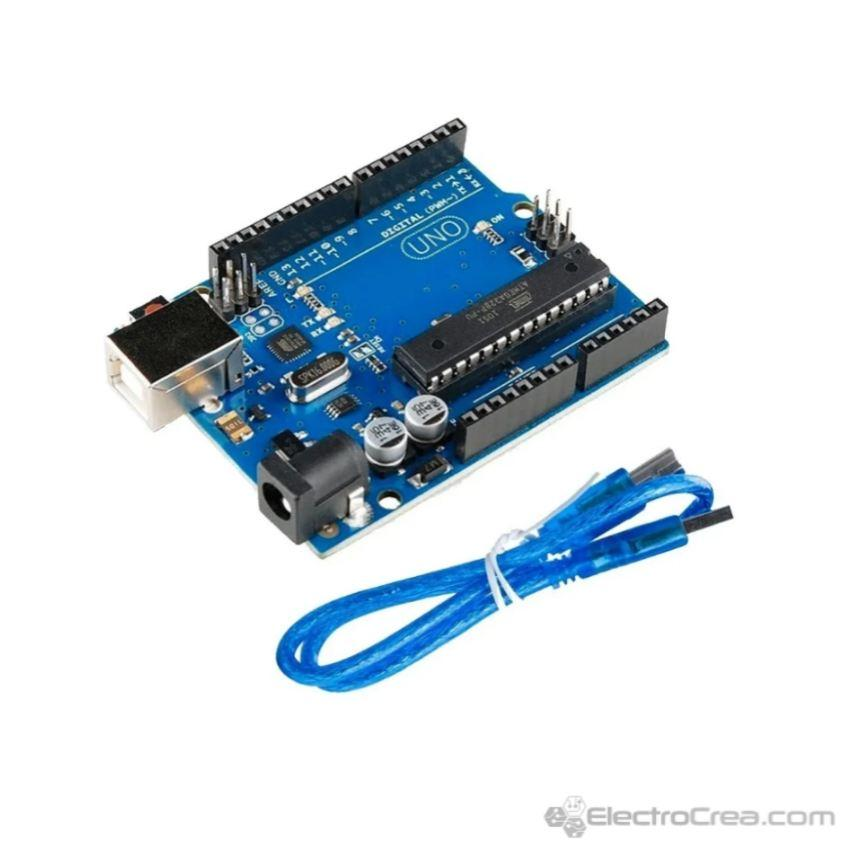

Códigos
Bienvenidos a la sección de códigos.
En esta sección hablaremos sobre los códigos realizados en este proyecto.
¿Funciones en el código?
Una de las funciones principales esque el robot detecte los objetos.
Otra de las opciones precindibles esque el coche pueda esquivar los obstaculos sin ningun problema.
¿Para que sirven estos códigos y cual es la función de cada uno?
El codigo sirve para que el sensor pueda detectar y esquivar, por otra parte los códigos arduino sirven para la función de los motores, el servo y módulo Bluetooth.
¿En que nos hemos basado para desarrollarlos?
Los códigos los hemos buscado por internet, hemos hecho algunos cambios para que funcionase correctamente, en el caso del arduino configurar bien los pines de los motores, ajustar el delay del servo y etc...
¿Como hemos implementado el código en el proyecto?
El código lo hemos ido implementando por partes, para así comprobar que todo funcionase correctamente, empecemos por comprobar la funcionalidad de los motores y del Bluetooth, y acabemos por comprobar el sensor.
¿Como ha ido evolucionando el desarrollo del código?
Habiamos empezado por buscar diferentes codigos por Internet que cumplieran estas funciones y al final no hemos quedado con el mas completo. Apartir de ese fuimos modificando los codigos.